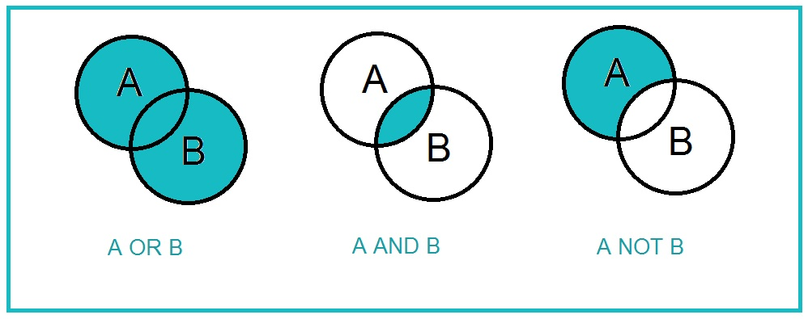

Advanced Search Technique
Advanced searching techniques gives you multiple ways of searching of controlling what
results you will get. It w till help users to find information in the fast, effective way.

Special rules |
|
|---|---|
OR |
Retrieves any or all of the search terms. E.g. Lemon OR Lim |
AND |
Narrows and retrieves records with both terms. E.g. Apple AND Tree |
NOT |
Only retrieves records for the first term but not second. E.g. Shirt NOT red |
Joining |
Use different boolean operators to retrieve records. E.g. (Apple AND Tree) Not Brown |
" " |
Search for an exact phrase by using " " E.g. "I am a boy" |
Wildcards(*) |
Wildcards search for multiple spellings of a word when * is placed into a word. E.g. recogni*e |